1 Customizing Plots
1.0.1 Key Concepts
We can create almost any customized visualization using a small number of functions from the Core R graphics engine.
Creating a new canvas:
- plot.new()
- plot.window( xlim, ylim )
Adding data:
- points()
- lines()
- segments()
- ablines()
Annotating data:
- text()
Annotating the canvas:
- title()
- axis()
- box()
1.1 Packages Used in This Chapter
We will use some data from the Lahman baseball data package for examples in this chapter.
The People data frame contains information about professional baseball players. We will focus on the relationship between height and weight of the players using the Body Mass Index (bmi) measure.
The data is interesting because it is easy to detect an abrubt and significant increase in baseball player size starting in the 1980’s when the the abuse of steroids began.

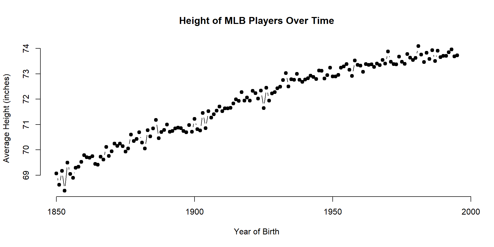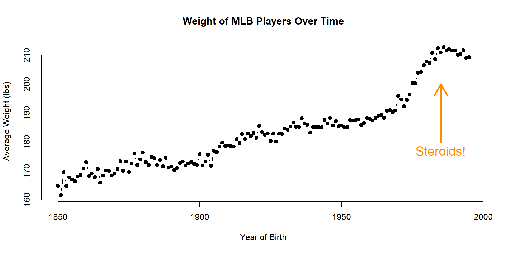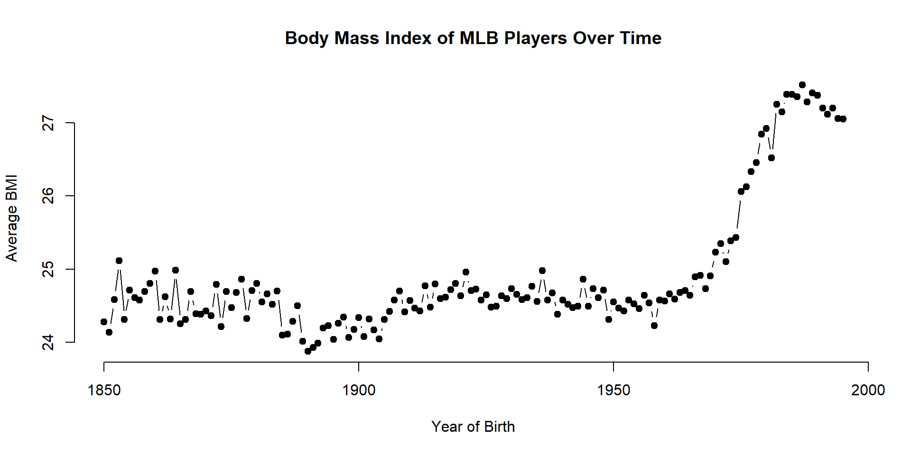
1.2 Core Graphic Functions
points(
x=x, y=y, # plots points at the x,y positions
pch=19, # the type of point to plot
cex=2, # aspect ratio of point size
col="red", # color of points
bg="green" # fill color for open symbols
)
text(
x=x, y=y, # draws a line by connecting points
labels=some.text, # vector of labels to plot on the graph
pos=3, # position: 1=below, 2=left, 3=above, 4=right
cex=2, # aspect ratio of text size
col="red" # color of text
)
lines(
x=x, y=y, # draws a line by connecting points
lty="l", # type of lines, same as above
lwd=0.5, # line thickness
)
segments(
x0=x0, y0=y0, # starting points of the segments (usually a vector)
x1=x1, y1=y1, # end points of the segments (usually a vector)
... # other arguments from lines()
)
title(
main="Plot Title", # text for the plot title
xlab="x variable", # text for the x-axis label
ylab="y variable", # text for the y-axis label
line= -1 # move the title closer / further
)
axis(
side=1 # 1=below, 2=left, 3=above, 4=right
at=c(10,20,30), # position of tick marks
labels=c("S","M","L") # labels for tick marks
)1.3 Layering Approach
Graphs in R are created by layering elements on top of each other. The easiest way to understand this is to build a plot from piece by piece.
The following graph is comprised of six components:
- plot box
- points
- x-axis
- y-axis
- x-label
- y-label
Many other elements can be added to the plot, but you will see below the flexibility that is gained by mastering even the basic plotting functions.
1.3.1 Load Player Data
The Lahman package is an example of a data package in R - one that does not include new functions or analytical tools. Rather, it contains player and team statistics stored as a collection of data frames to make it easy to share and deploy for any analytics involving player or team performance.
Datasets are loaded from R packages using the data() function.
# install.packages( "dplyr" )
# install.packages( "Lahman" )
library( dplyr ) # data wrangling
library( Lahman ) # baseball data
data( People )| nameFirst | nameLast | height | weight | birthYear |
|---|---|---|---|---|
| David | Aardsma | 75 | 215 | 1981 |
| Hank | Aaron | 72 | 180 | 1934 |
| Tommie | Aaron | 75 | 190 | 1939 |
| Don | Aase | 75 | 190 | 1954 |
| Andy | Abad | 73 | 184 | 1972 |
| Fernando | Abad | 74 | 235 | 1985 |
Remove players that are missing height or weight measures:
People <- select( People, height, weight, birthState )
People <- na.omit( People )1.3.2 Building the Canvas
Custom graphics in R allow you to create a blank canvas upon which you will add your data and your data narrative.
The canvas is the Cartesian coordinate system upon which you will place the data. You need to define the coordinate system before plotting any data using the xlim= and ylim= arguments.
The plot.new() function launches a new graphics window. The plot.window() function sets the coordinates.
plot.new()
plot.window( xlim=c( 1, 10 ), ylim=c( 1, 5 ) )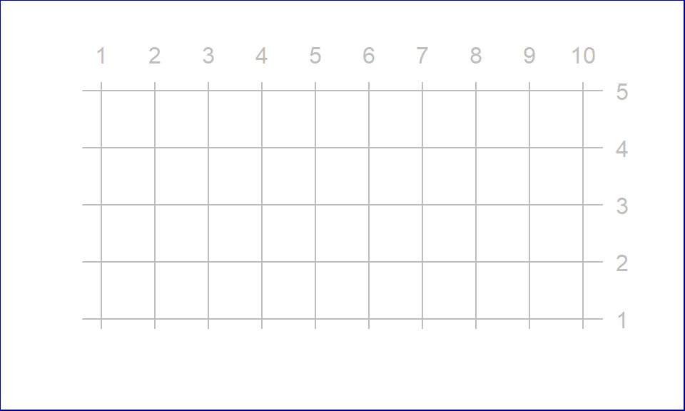
Note that data can only be plotted on the canvas, but graphs also contain margins around the canvas used for titles, text, and axes.
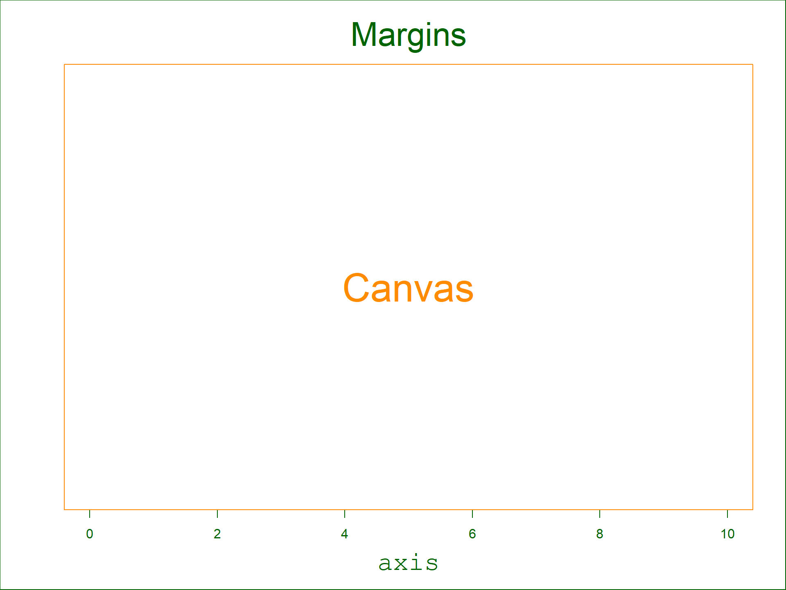
We need to pick a grid that suits our data. Since we will examine the relationship between height and weight we will use the min and max values of these variables to create the bounding box for our canvas.
# find max and min values for each variable
xmin <- min( People$height )
xmax <- max( People$height )
ymin <- min( People$weight )
ymax <- max( People$weight )
# empty plot
plot.new()
plot.window( xlim=c(xmin,xmax), ylim=c(ymin,ymax) )
box( col="black" )
box( "outer", col="gray" )
text( 64, 200, "(Empty Canvas)", cex=2 )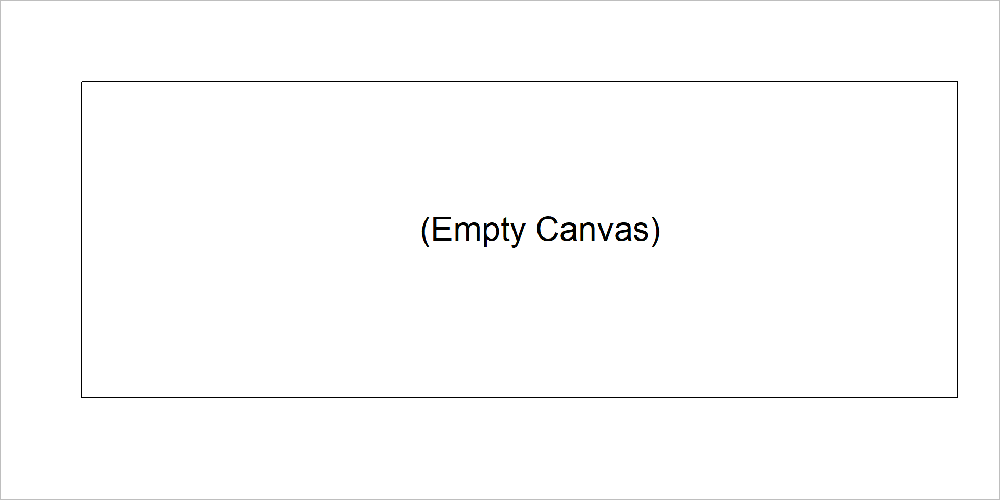
1.3.3 Add Points
We can now add some data to the canvas:
plot.new()
plot.window( xlim=c(xmin,xmax), ylim=c(ymin,ymax) )
box( col="black" )
box( "outer", col="gray" )
points( People$height, People$weight, pch=19 )1.3.4 Add axes
# add an x-axis and y-axis
plot.new()
plot.window( xlim=c(xmin,xmax), ylim=c(ymin,ymax) )
box( "outer", col="gray" )
points( People$height, People$weight, pch=19 )
axis( side=1 )
axis( side=2, las=1 ) # las turns the y-axis tick mark numbers 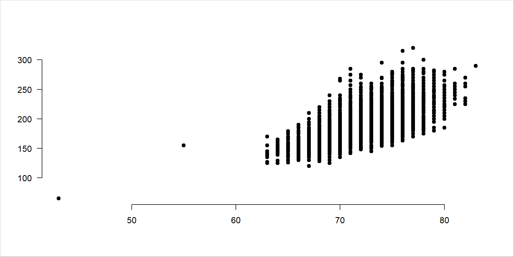
1.3.5 Add Axis Labels
# add axis labels
plot.new()
plot.window( xlim=c(xmin,xmax), ylim=c(ymin,ymax) )
points( People$height, People$weight, pch=19 )
axis( side=1 )
axis( side=2, las=1 )
title( xlab="Height (inches)", ylab="Weight (lbs)" )
title( main="Relationship Between Height and Weight of MLB Players" )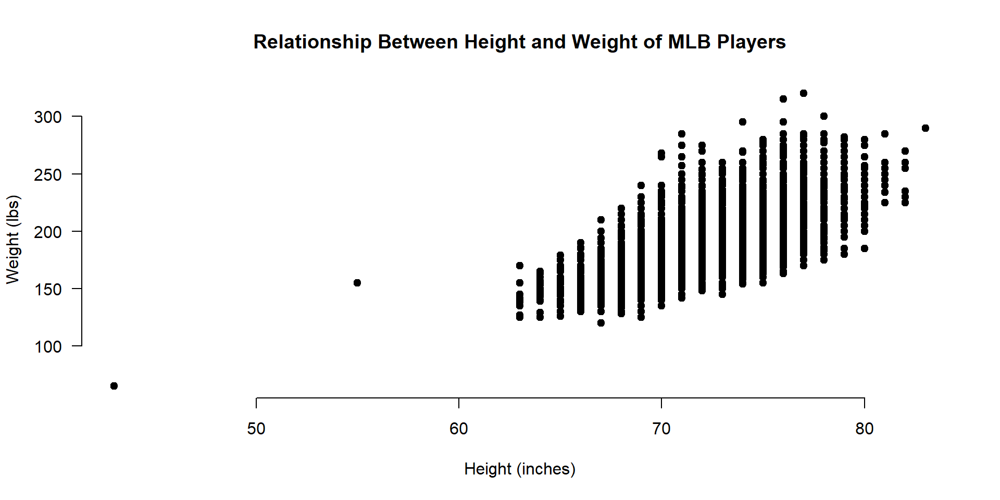
1.3.6 Improving Aesthetics
Now let’s see if we can improve the look and feel of the graph to make the narrative pop.
This is pretty dense data, so let’s see if we can use some color transparency to get a sense of typical players versus outliers.
We can adjust the xlim and ylim arguments so we don’t show the empty bottom left quadrant, and let’s use the gray() color function to add some transparency to the over-plotted data points.
The first argument of the gray() function is a value between 0 and 1 specifying how dark you want the gray (0 being white, 1 being black), and the second argument is another value between 0 and 1 specifying the transparency of the points (0 being invisible and 1 being no transparency).
We can also jitter them a bit (a tiny amount of random error to each data point) so they are not all plotted on top of each other since height and weight only take integer values.
# rnorm() adds random noise to a data point
height.jitter <- People$height + rnorm( nrow(People) )
weight.jitter <- People$weight + rnorm( nrow(People) )
plot.new()
plot.window( xlim=c(62,xmax), ylim=c(110,ymax) )
points( height.jitter, weight.jitter,
pch=19, cex=1.5, col=gray(0.5,0.1) )
axis( side=1 )
axis( side=2 )
title( xlab="Height (inches)", ylab="Weight (lbs)",
main="Relationship Between Height and Weight of MLB Players" )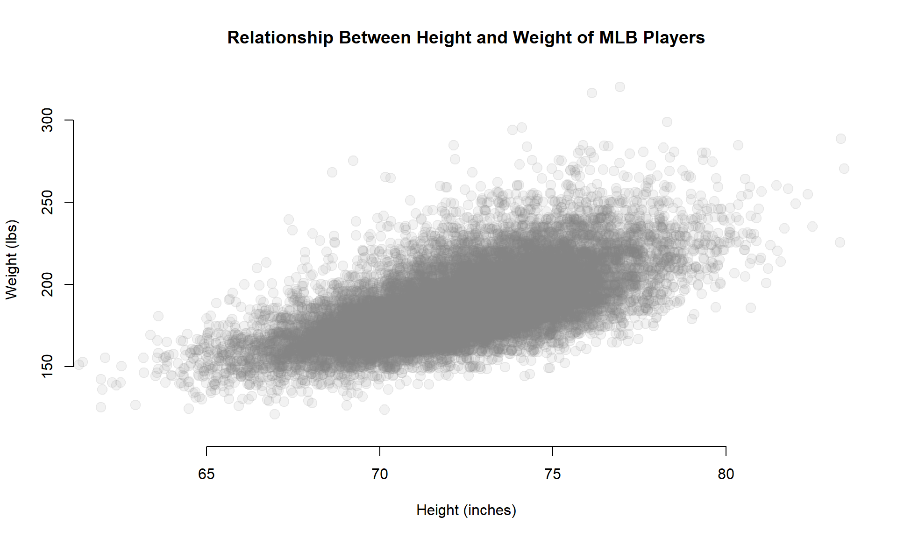
1.3.7 Highlighting Groups
This is helpful, but maybe we want to highlight a group within the data.
Perhaps we have a theory that corn-fed players that grew up in Iowa are taller and weigh more.
plot.new()
plot.window( xlim=c(60,xmax), ylim=c(110,ymax) )
axis( side=1 )
axis( side=2 )
title( xlab="Height (inches)", ylab="Weight (lbs)",
main="Relationship Between Height and Weight of MLB Players" )
points( height.jitter, weight.jitter,
pch=19, cex=2, col=gray(0.5,0.02) )
# highlight players from Iowa
these.iowa <- People$birthState == "IA"
# use our selection vector to subset the data used in overplotting
points( height.jitter[ these.iowa ],
weight.jitter[ these.iowa ],
pch=19, cex=0.5, col="firebrick3" )
points( 63, 250, pch=19, col="firebrick" )
text( 63, 250, "Players form Iowa",
pos=4, cex=1.5, col="darkgray" )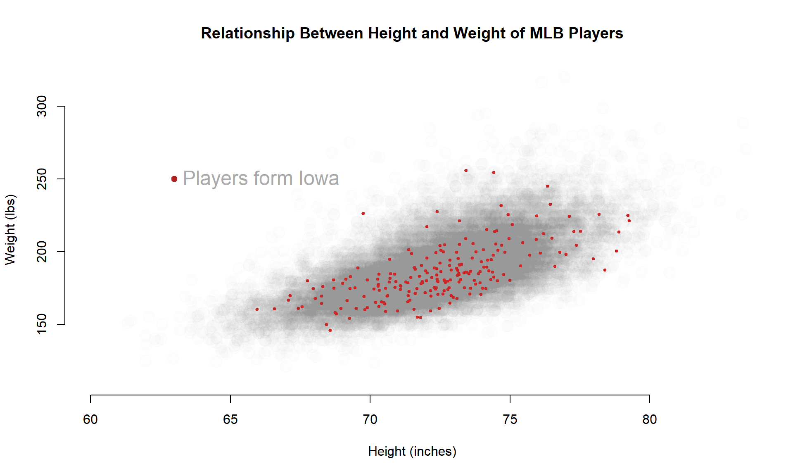
Let’s add another layer with only the data that falls within the 25th to 75th percentiles of BMI, what we might consider “averaged” sized players relative to their height.
plot.new()
plot.window( xlim=c(60,xmax), ylim=c(110,ymax) )
axis( side=1 )
axis( side=2 )
title( xlab="Height (inches)", ylab="Weight (lbs)",
main="Relationship Between Height and Weight of MLB Players" )
points( height.jitter, weight.jitter,
pch=19, cex=2, col=gray(0.5,0.02) )
# highlight average-sized players
bmi <- (People$weight * 0.45359237) / (People$height / 39.370)^2
bmi.25th <- quantile( bmi, 0.25, na.rm=T )
bmi.75th <- quantile( bmi, 0.75, na.rm=T )
# group definition: bmi > bmi.25th & bmi < bmi.75th
points( height.jitter[ bmi > bmi.25th & bmi < bmi.75th ],
weight.jitter[ bmi > bmi.25th & bmi < bmi.75th ],
pch=19, cex=0.1, col="firebrick3" )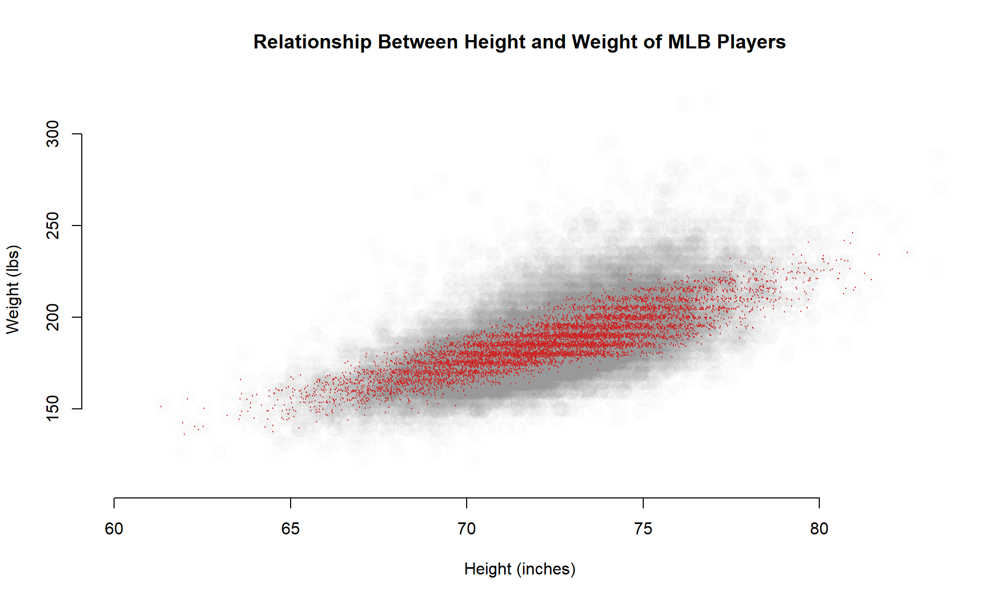
1.4 Highlighting Cases
Let’s look back at the original plot. Do you see anything strange?
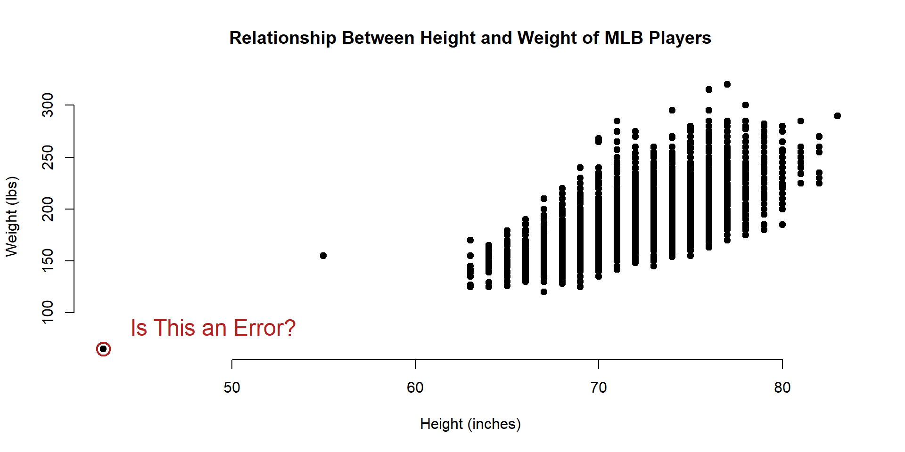
The smallest data point in the dataset seems to represent a baseball player that is 40 inches tall and weighs 80 pounds. That must be some sort of data entry error, right?
data( People)
People[ which.min(People$height) , c(14,15,17:20,2) ] %>% pander()| nameFirst | nameLast | weight | height | bats | throws | birthYear | |
|---|---|---|---|---|---|---|---|
| 6211 | Eddie | Gaedel | 65 | 43 | R | L | 1925 |
It turns out that Eddie Gaedel, at 3 foot 7 inches, was the shortest man to ever play on a professional team. He was hired by the owner of the St. Louis Browns as a publicity stunt. He was so short that his strike zone, which goes form the knee to mid-chest, was too small for most pitchers. Crowds would cheer as he would quickly accumulate walks.

Perhaps it would be useful to annotate some of the outliers on our graph. To do this, we can use the text() function.
text(
x=x, y=y, # draws a line by connecting points
labels=some.text, # vector of labels to plot on the graph
pos=3, # position: 1=below, 2=left, 3=above, 4=right
cex=2, # aspect ratio of text size
col="red" # color of text
)Let’s start by circling some data points. We do this by plotting a slightly larger point around the originals for the tallest, shortest, and heaviest players.
plot.new()
plot.window( xlim=c(0,1), ylim=c(0,1) )
points( 0.5, 0.5, pch=19, col="gray", cex=3 )
points( 0.5, 0.5, pch=1, cex=5, col="firebrick" )
title( main="Large Hollow Point Plotted \nOver Solid Point" )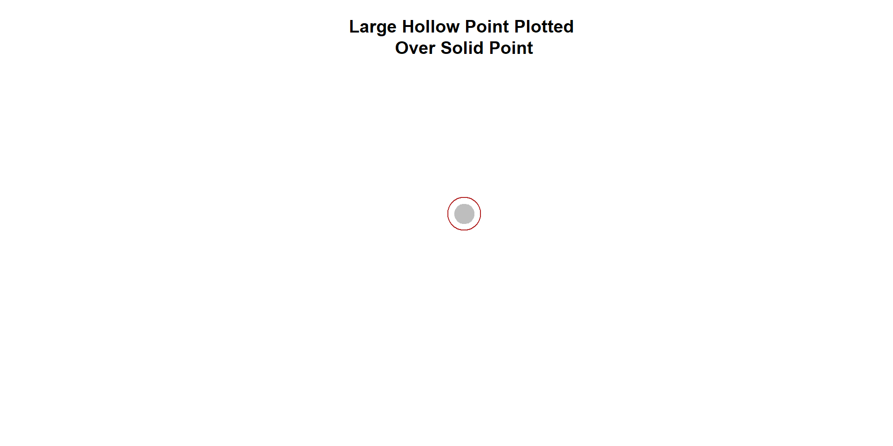
this.shortest <- which.min(People$height)
this.tallest <- which.max(People$height)
this.heaviest <- which.max(People$weight)
People[ c(this.shortest,this.tallest,this.heaviest), c(14,15,17:20,2) ] %>% pander()| nameFirst | nameLast | weight | height | bats | throws | birthYear | |
|---|---|---|---|---|---|---|---|
| 6211 | Eddie | Gaedel | 65 | 43 | R | L | 1925 |
| 15046 | Jon | Rauch | 290 | 83 | R | R | 1978 |
| 20263 | Walter | Young | 320 | 77 | L | R | 1980 |
Let’s highlight the three outliers in our dataset.
plot( People$height, People$weight,
pch=19, col="gray",
frame.plot=FALSE,
xlab="Height (inches)",
ylab="Weight (lbs)",
main="Relationship Between Height and Weight of MLB Players" )
points( People$height[ this.shortest ],
People$weight[ this.shortest ],
col="firebrick", cex=2, lwd=2 )
points( People$height[ this.tallest ],
People$weight[ this.tallest ],
col="firebrick", cex=2, lwd=2 )
points( People$height[ this.heaviest ],
People$weight[ this.heaviest],
col="firebrick", cex=2, lwd=2 )
text( People$height[ this.shortest ],
People$weight[ this.shortest ],
"Some Text Here", col="firebrick", pos=3 )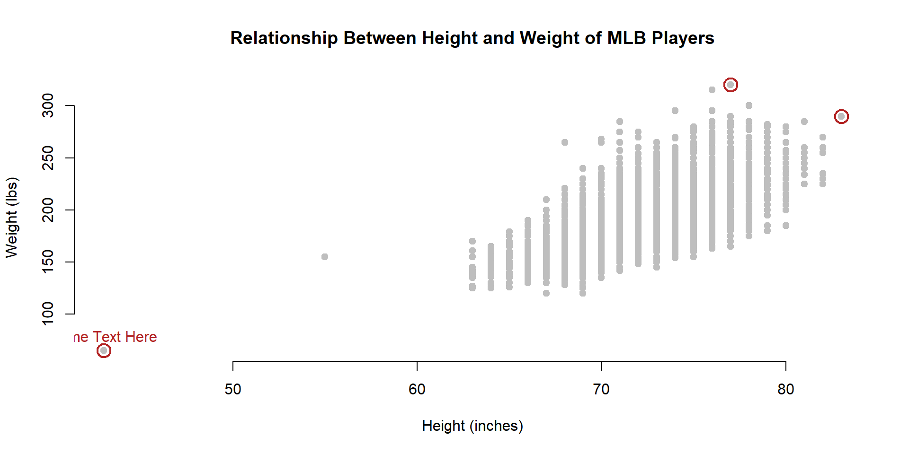
We add text to the graph through the x,y coordinate for the text, the text itself, and the pos= argument is used to specify where the text should go.
- pos=1: below
- pos=2: left
- pos=3: top
- pos=4: right
- no pos: on the point
You can see that we have a problem above. Our text above Eddie Gaedel is lopped off because it wanders outside of the plot window. We can add additional real estate by expanding plot window with the xlim= and ylim= arguments.
You can add a line break to a string by including the carriage return symbol ‘’ in the string.
data( People)
plot( People$height, People$weight,
pch=19, col="gray", cex=0.8,
xlim=c(30,100), ylim=c(50,450),
frame.plot=FALSE,
xlab="Height (inches)",
ylab="Weight (lbs)",
main="Relationship Between Height and Weight of MLB Players" )
d.small <- People[ c(this.shortest,this.tallest,this.heaviest), c(14,15,17:20,2) ]
points( d.small$height,
d.small$weight,
col="firebrick", cex=2, lwd=2 )
text( People$height[ this.shortest ],
People$weight[ this.shortest ],
"Eddie Gaedel \nHeight: 43 Inches \nWeight: 65 Lbs",
col="firebrick", cex=0.8, pos=3, offset=1 )
text( People$height[ this.tallest ],
People$weight[ this.tallest ],
"Jon Rauch \nHeight: 83 Inches \nWeight: 290 Lbs",
col="firebrick", cex=0.8, pos=4, offset=1 )
text( People$height[ this.heaviest ],
People$weight[ this.heaviest ],
"Walter Young \nHeight: 77 Inches \nWeight: 320 Lbs",
col="firebrick", cex=0.8, pos=3, offset=1 )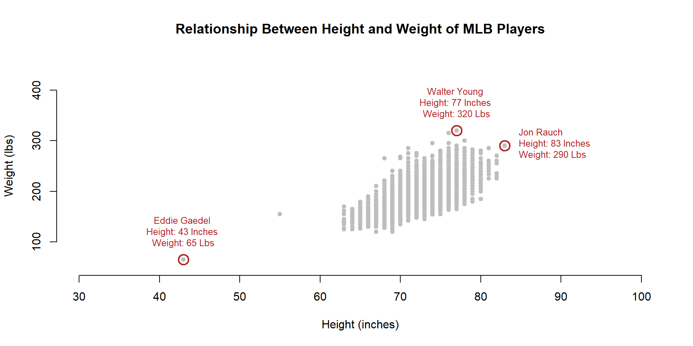
1.5 Using Text as Plot Points
As you can see, the text() function can be used to add narrative to a graphic. It can also be used in place of plotting points.
Let’s think about testing the hypothesis that players have gotten larger over time. When we look at the basic relationship between height and weight we see the distribution of player sizes, but this plot has no information about the time-periods in which they played so we can’t tell if they are growing larger over time. What if we replace the plotting points with birth years?
plot.new()
plot.window( xlim=c(60,xmax), ylim=c(110,ymax) )
text( x=People$height,
y=People$weight,
labels=People$birthYear )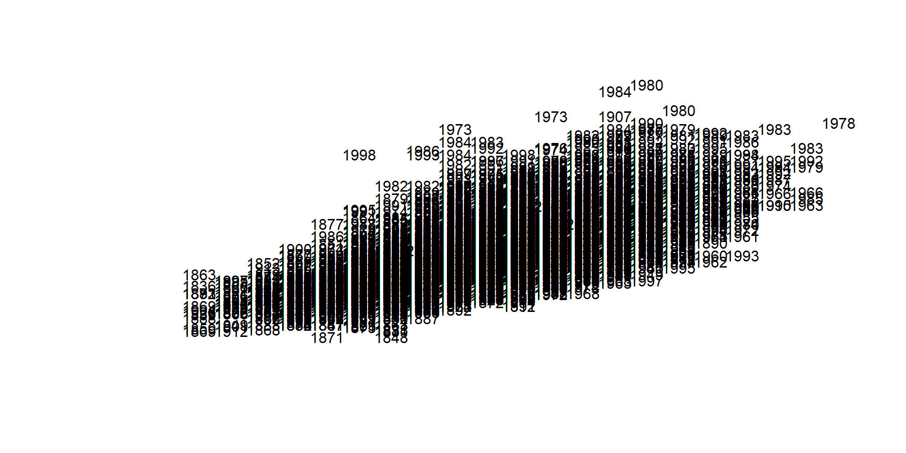
This is too dense to be meaningful. Maybe we can try to make the text smaller?
plot.new()
plot.window( xlim=c(60,xmax), ylim=c(110,ymax) )
text( x=People$height,
y=People$weight,
labels=People$birthYear, cex=0.5 )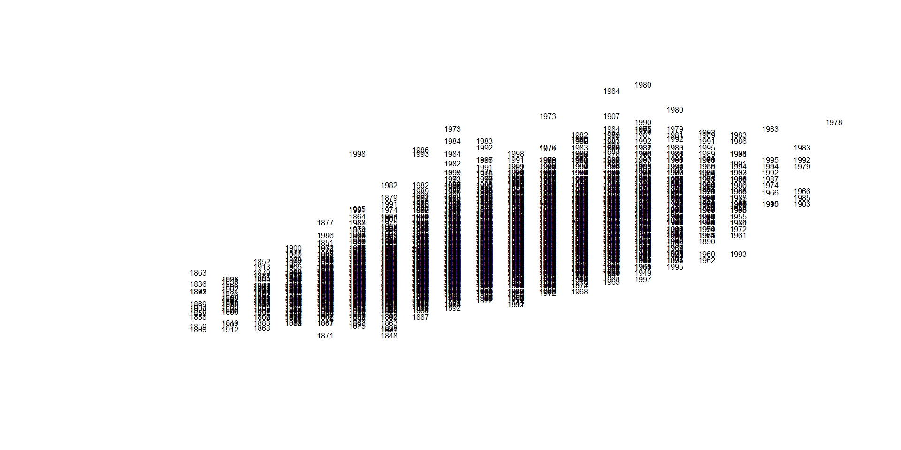
Still not very insightful. We have over 19,000 players in the database, which appears to be too many for this graphic. Let’s thin the data out by taking a random sample of the full dataset.
par( mar=c(0,0,0,0) )
m.sample <- sample_n( People, 100 )
plot.new()
plot.window( xlim=c(65,78), ylim=c(130,280) )
text( x=m.sample$height,
y=m.sample$weight,
labels=m.sample$birthYear, cex=0.8 )
axis( side=1, line=-2 )
axis( side=2, line=-2 )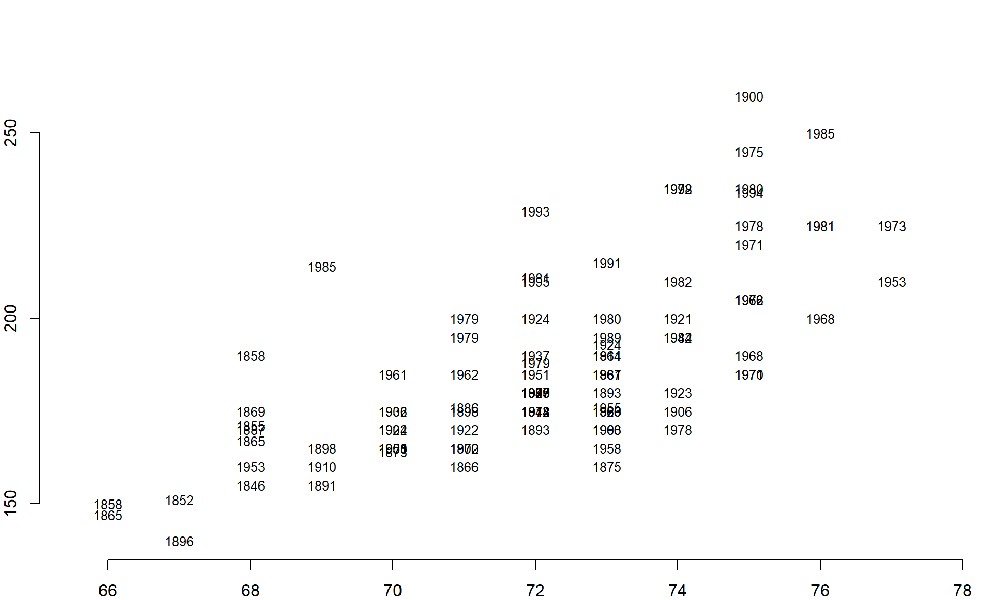
This is a big improvement. We can eyeball the data and start to pull out some trends. The people born in the 1800’s tend to be near the bottom of each pile of years, for example.
Perhaps we can improve our visual hypothesis testing if we add some color coding. Let’s identify all of the individuals born since 1980 and color their birth years red to highlight the youngest cohort in the data. If people have gotten larger over time, we would expect this group to cluster near the top of the distribution.
red.gray <- ifelse( m.sample$birthYear >= 1980, "firebrick", "gray" )
text( x=m.sample$height,
y=m.sample$weight,
labels=m.sample$birthYear,
col=red.gray )
And we in fact see the pattern emerge. The youngest cohort, highlighted in red, seems to cluster near the top right, which suggests they have grown both taller and heavier over time.
This hypothesis can be test more rigorously in other ways, but the demonstration at least gives an idea about how we might explore the data efficiently using flexible R graphing functions.
2 Additional Parameters
The small number of functions introduced here in these chapters on data visualization can be used to make highly-customizable graphics that help you discover important patterns in the data and share the story with others.
We are only scratching the surface on the options available within plotting functions. To see the default list of parameter settings in the R plot() function, type:
par()
help( par )These chapters show how core R graphics can be used to create highly-customized graphics. You can see that you have fine-tuned access to all aspects of the figures you create. You don’t have to become familiar with all of the options to develop solid visualization skills. Rather, you will likely focus on a few specific functions. A little time invested in learning the arguments for plot(), points(), lines(), text(), title(), and axis() goes a long way.
2.1 Margins
It is sometimes helpful to include narrative in the margins instead of on actual graph. In these cases you need to expand your margins and use the title(), axis() and mtext() functions. The margins themselves are controlled by the inner margin mar=c argument and outer margin oma=c arguments in the graphical parameters function par(), which is called prior to your plot function to change how a new plot will be laid out.
Similar to other parameters, the four argument values refer to the bottom, left, top, and right regions on the graph.
par( mar=c(5,4,4,2), oma=c(3,3,3,3) )
plot( ... )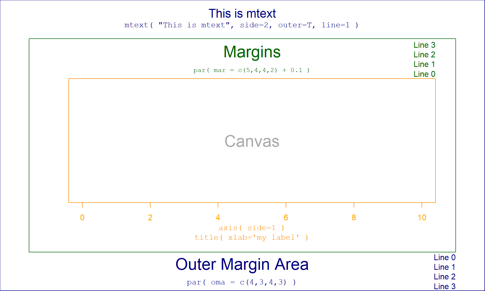